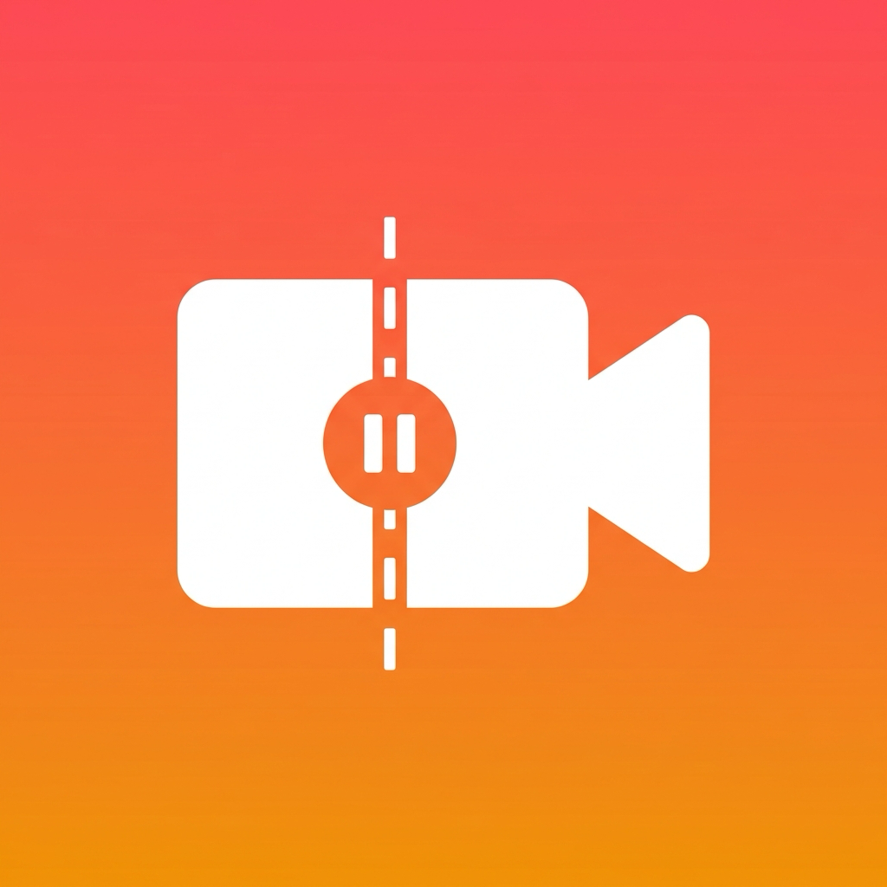

つなぎ撮りカメラ
止めても消えません。何日後でも、続きから。
お問い合わせ
「つなぎ撮りカメラ」は、動画を一時停止したまま、アプリを閉じても、何日たっても、続きから撮れるカメラアプリです。旅行の動画を機内では止めて、現地に着いたら再開 — 撮った映像は、編集アプリを開かなくても、はじめから1本の動画になっています。
カメラロールにバラバラの動画が何十本もたまって二度と見返さない、という悩みをなくすためのアプリです。撮影は止まっても、プロジェクトは止まりません。
主な特長
何日でも続く一時停止
アプリを終了しても端末を再起動しても、撮りかけのプロジェクトはそのまま。1タップで続きから撮影できます。
中断時間が刻まれるフィルム帯
カットの継ぎ目に「⏸ 3日」のように止めていた時間が刻まれ、撮りためた軌跡がひと目でわかります。
待ち時間ゼロの結合プレビュー
撮ったそばから、すべてのカットが1本につながった状態で再生。「結合中…」と待たされません。
なめらか結合書き出し
継ぎ目の音と映像をなじませて1本の動画として保存。無劣化の高速書き出しも選べます。
既存動画への撮り足し（Pro）
以前撮った動画を取り込んで、その続きを今日から撮り足せます。
止めるたびに即保存
録画を止めた瞬間にその場で保存。撮影中に課金画面が出ることもありません。
使い方
- 撮りはじめる：録画ボタンを押して撮影し、区切りのいいところで止めます。止めたらアプリを閉じて大丈夫です。
- 何日後でも、続きから：次に撮りたくなったら棚のプロジェクトを開くだけ。前回の最終フレームが薄く重なって表示されるので、構図を合わせて撮り足せます。
- 1本にして保存：プレビューはいつでも1本につながった状態。「保存」で写真ライブラリに1本の動画として書き出します。
料金
撮影・一時停止・結合プレビューは無料・無制限でお使いいただけます（4K撮影も無料）。最初のプロジェクト1本はそのまま書き出せます。
Pro（買い切り ¥800・お支払いは1回のみ）で、次の機能が追加されます。
- 2本目以降のプロジェクトの書き出し
- 4K/60fpsでの書き出し
- 既存動画への撮り足し（ライブラリからの取り込み）
プライバシー
本アプリは個人情報を一切
収集・送信しません。完全オフラインで動作し、撮影した映像や設定はすべて端末内にのみ保存されます。写真ライブラリを読み取る権限も要求しません（書き出した動画の保存のみ）。詳しくは
プライバシーポリシー をご覧ください。
ご注意
撮影中の素材はアプリ内に保存されます。アプリを削除すると、書き出していない撮りかけの素材も一緒に削除されますのでご注意ください。大切な映像は「今すぐ保存」でいつでも途中まで書き出せます。